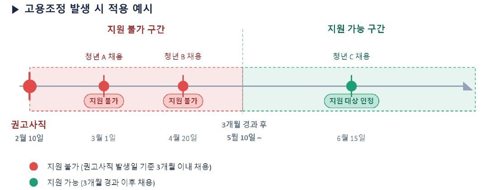
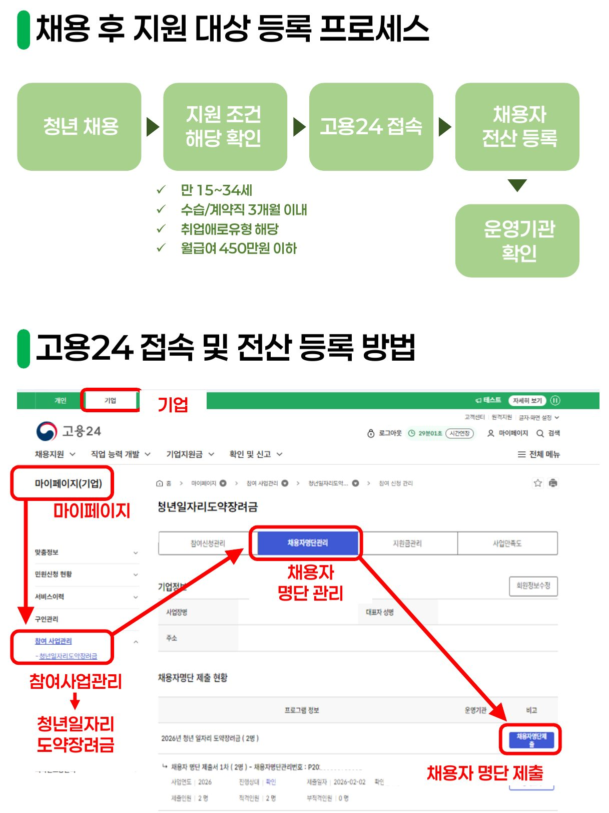
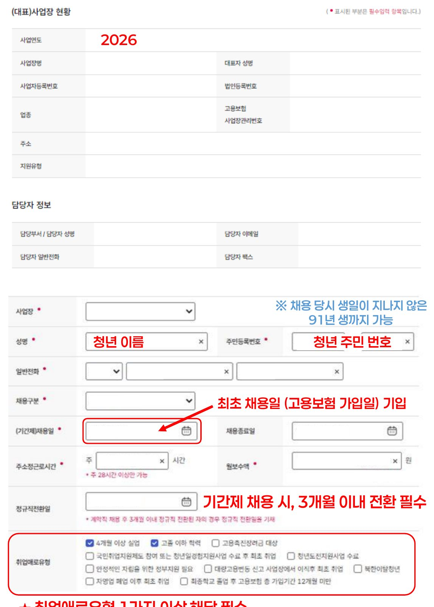
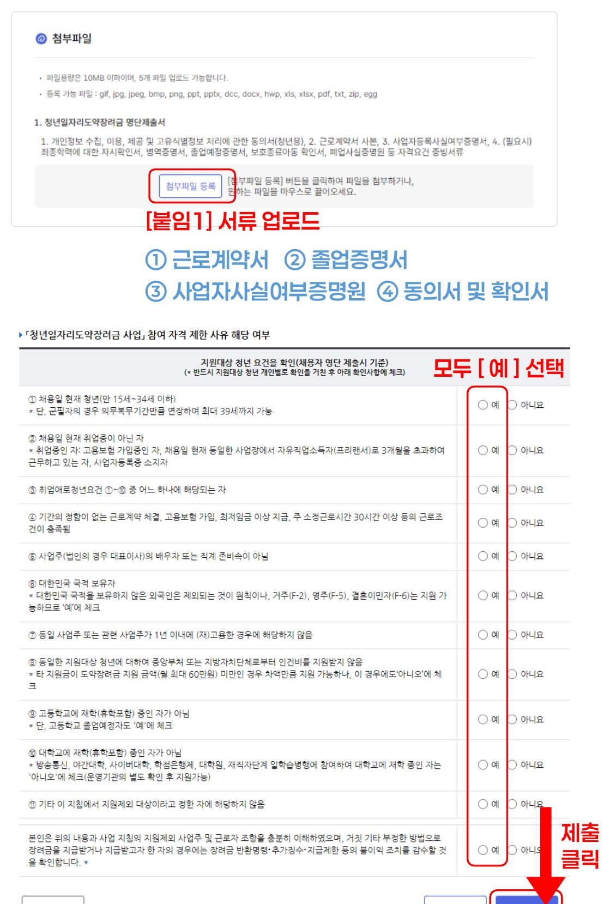

고용노동부 지정 위탁운영기관 · (주)하이테커 강남지사
참여 승인 후 청년을 채용하셨다면, 아래 순서대로 확인하고 고용24에 채용자를 등록해 주세요.
아래 세 가지를 모두 충족해야 지원 대상으로 인정됩니다.
강남구(수도권 유형)는 아래 10가지 중 1개 이상에 해당해야 합니다.
| 유형 | 요건 | 확인 방법 |
|---|---|---|
| ❶ 장기 실업 | 가장 최근 고용보험 상실일로부터 연속 4개월 이상 실업 상태 | 고용보험 이력 조회 |
| ❷ 고졸 이하 | 채용일 기준 고졸 이하 학력 또는 고등학교 졸업예정자 | 최종학력 자기확인서(서식 6-2) |
| ❸ 구직촉진수당 대상 | 직업교육훈련 후 구직등록자, 중증장애인, 가족부양 여성 등 | 워크넷 조회 |
| ❹ 국민취업지원제도 | 국취 참여 후 취업활동계획(IAP) 수립 후 최초 취업자 | 참여 이력 확인 |
| ❺ 청년도전지원사업 | 사업 수료 청년 (졸업예정자는 채용일 전 수료일자 증명 필수) | 수료 이력 확인 |
| ❻ 자립지원 필요 | 자립준비청년, 보호연장청년, 청소년복지시설 입퇴소 청년 | 보호종료확인서 등 |
| ❼ 대량고용변동 이직자 | 2025년 이후 신고 사업장 이직 후 최초 취업 | 관련 이력 확인 |
| ❽ 북한이탈청년 | 북한이탈주민 등록 청년 (만 15~34세) | 북한이탈주민등록확인서 |
| ❾ 자영업 폐업 | 자영업 폐업 이후 최초 취업자 | 폐업사실증명원(국세청) |
| ❿ 고보 12개월 미만 | 최종학교 졸업일 이후 고용보험 총 가입기간 12개월 미만 | 고용보험 이력 조회 |
| 조건 | 내용 | 비고 |
|---|---|---|
| 나이 | 만 15세 ~ 34세 | 군필자는 의무복무기간만큼 연장 (최대 만 39세) |
| 근로계약 | 기간의 정함이 없는 정규직 채용 | 수습 3개월 이하 허용 |
| 근로시간 | 주 소정근로시간 28시간 이상 | 미달 시 지원 불가 |
| 임금 하한 | 최저시급 이상 지급 | 2026년 기준 10,320원 |
| 임금 상한 | 월 평균 급여 450만원 이하 | 6개월 세전 총액 2,700만원 이하 |
| 고용보험 | 채용 즉시 고용보험 가입 신고 | 지연 신고 시 지원 취소 가능 |
| 사업자등록 | 채용 청년의 사업자등록 사실이 없을 것 | 사업자등록 사실여부 증명서 제출 |
| 주 근로시간 | 월 환산시간 (주휴 포함) | 월 최저 급여액 |
|---|---|---|
| 주 28시간 | 146시간 | 1,506,720원 이상 |
| 주 30시간 | 157시간 | 1,620,240원 이상 |
| 주 35시간 | 183시간 | 1,888,560원 이상 |
| 주 40시간 | 209시간 | 2,156,880원 이상 |
최저임금은 최저임금 산입 급여(기본급 등)만으로 판단합니다. 고정 연장수당·야간근로가산수당 등 각종 수당은 산입되지 않습니다.

채용자 등록 마지막 단계에서 첨부합니다. 채용자 1명당 아래 서류를 준비해 주세요.
| 서류명 | 해당 조건 | 용도 |
|---|---|---|
| 제적증명서 | 중퇴자 | 최종학력 확인 |
| 병적증명서 | 만 35세 이상 군필자 | 의무복무기간 확인 (최대 만 39세) |
| 자립지원청년 확인서 | 해당자 | 취업애로유형 확인 |
| 폐업사실증명원 | 자영업 폐업 후 취업자 | 취업애로유형 확인 |
청년 채용 → 지원 조건 확인 → 고용24 채용자 등록 → 운영기관 확인 순서로 진행됩니다.

나이 기준: 채용일 당시 생일이 지나지 않은 91년생까지 가능합니다 (군필자는 복무기간만큼 연장).


각 회차는 해당 근속 개월의 급여 지급 다음날부터 안내 기한까지 신청합니다. 기한 내 신청하지 않으면 지원금이 소멸될 수 있습니다. 신청 시기가 되면 안내 메일과 문자를 보내 드립니다.
6개월 근속 후 중도퇴사 시에는 월할로 지급됩니다. (예: 7개월 15일 근무 후 퇴사 → 360만원 + 1개월분 60만원 = 420만원)
근로계약서에 아래 문구를 반드시 기재해 주세요.
"수습 기간 동안 급여의 OO% 지급, 그러나 그 금액이 최저임금의 90%에 미치지 못할 경우, 당해 최저임금의 90%를 지급한다."
※ 2026년 최저임금의 90% = 1,941,192원
고용24 기업회원 로그인 후 등록 가능합니다